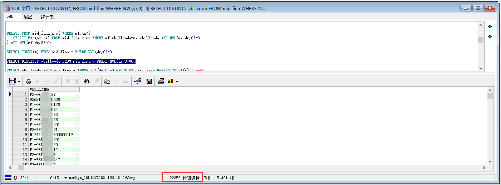

<!DOCTYPE HTML>
<html>
<head><meta name="generator" content="Hexo 3.8.0">
  <meta charset="utf-8">
  <meta http-equiv="pragma" content="no-cache">
  <meta http-equiv="cache-control" content="no-cache">
  <meta http-equiv="expires" content="0">
  
  <title>Oracle去重而保存时间最新的数据 | 徐子辉的个人站点</title>
  <meta name="author" content="xuzh">
  
  <meta name="description" content="Oracle去重而保存时间最新的数据
本篇文章仅仅是我工作上的一个随笔记录，写的不是很详细，如果不了解我所做的工作的业务内容，可能会看的一头雾水。大家可以仅做为一种参考思路！

场景描述：    单据表 fdcpm_pay_apply 中的财务处理状态的值一直是从财务中间表 mid_fina_x 中获取的现在我们在 fdcpm_pay_apply 中添加一个 ifinastatus 的字段用来直接存储财务处理状态的值，并且以后就按照这种方式存储，所以需要把财务中间表中已有的财务处理状态给刷到对应单据的 ifinastatus字段中。
查看表中重复的数据有哪些(去掉重复，只显示单据编码vbillcode)1SELECT vbillcode FROM mid_fina WHERE NVL(dr,0)=0 GROUP BY vbillcode HAVING COUNT(*)&amp;gt;1;
通过上步查询出来的vbillcode，可以查询出所有重复的数据123SELECT * FROM mid_fina WHERE NVL(dr,0)=0 AND vbillcode IN(    SELECT vbillcode FROM mid_fina WHERE NVL(dr,0)=0 GROUP BY vbillcode HAVING COUNT(*)&amp;gt;1);">
  
  
  <meta name="viewport" content="width=device-width, initial-scale=1, maximum-scale=1">

  <meta property="og:title" content="Oracle去重而保存时间最新的数据">
  <meta property="og:site_name" content="徐子辉的个人站点">

  
    <meta property="og:image" content="">
  

  
  
    <link href="/favicon.png" rel="icon">
  
  
  <link rel="stylesheet" href="/css/bootstrap.min.css" media="screen" type="text/css">
  <link rel="stylesheet" href="/css/font-awesome.css" media="screen" type="text/css">
  <link rel="stylesheet" href="/css/style.css" media="screen" type="text/css">
  <link rel="stylesheet" href="/css/responsive.css" media="screen" type="text/css">
  <link rel="stylesheet" href="/css/highlight.css" media="screen" type="text/css">
  <link rel="stylesheet" href="/css/google-fonts.css" media="screen" type="text/css">
  <!--[if lt IE 9]><script src="//html5shiv.googlecode.com/svn/trunk/html5.js"></script><![endif]-->

  <script src="/js/jquery-2.0.3.min.js"></script>

  <!-- analytics -->
  
<script>
  (function(i,s,o,g,r,a,m){i['GoogleAnalyticsObject']=r;i[r]=i[r]||function(){
  (i[r].q=i[r].q||[]).push(arguments)},i[r].l=1*new Date();a=s.createElement(o),
  m=s.getElementsByTagName(o)[0];a.async=1;a.src=g;m.parentNode.insertBefore(a,m)
  })(window,document,'script','//www.google-analytics.com/analytics.js','ga');
  ga('create', 'UA-70812759-1', 'auto');
  ga('send', 'pageview');
</script>


<script>
var _hmt = _hmt || [];
(function() {
  var hm = document.createElement("script");
  hm.src = "//hm.baidu.com/hm.js?cb5448498d7169c668b07c2b255d62c1";
  var s = document.getElementsByTagName("script")[0]; 
  s.parentNode.insertBefore(hm, s);
})();
</script>


</head>
</html>
 <body>  
  <nav id="main-nav" class="navbar navbar-inverse navbar-fixed-top" role="navigation">
    <div class="container">
      <button type="button" class="navbar-header navbar-toggle" data-toggle="collapse" data-target=".navbar-collapse">
		<span class="sr-only">Toggle navigation</span>
        <span class="icon-bar"></span>
        <span class="icon-bar"></span>
        <span class="icon-bar"></span>
      </button>
	  <a class="navbar-brand" href="/">徐子辉的个人站点</a>
      <div class="collapse navbar-collapse nav-menu">
		<ul class="nav navbar-nav">
		  
		  <li>
			<a href="/archives" title="All the articles.">
			  <i class="fa fa-archive"></i>Archives
			</a>
		  </li>
		  
		  <li>
			<a href="/categories" title="All the categories.">
			  <i class="fa fa-folder"></i>Categories
			</a>
		  </li>
		  
		  <li>
			<a href="/tags" title="All the tags.">
			  <i class="fa fa-tags"></i>Tags
			</a>
		  </li>
		  
		  <li>
			<a href="/about" title="About me.">
			  <i class="fa fa-user"></i>About
			</a>
		  </li>
		  
		</ul>
      </div>
    </div> <!-- container -->
</nav>
<div class="clearfix"></div>

  <div class="container">
  	<div class="content">
    	 


	
		<div class="page-header">
			<h1> Oracle去重而保存时间最新的数据</h1>
		</div>
	


<div class="row post">
	<!-- cols -->
	
	<div id="top_meta"></div>
	<div class="col-md-9">
	

	<!-- content -->
	<div class="mypage">		
	  		

	  <h4 id="Oracle去重而保存时间最新的数据"><a href="#Oracle去重而保存时间最新的数据" class="headerlink" title="Oracle去重而保存时间最新的数据"></a>Oracle去重而保存时间最新的数据</h4><blockquote>
<p>本篇文章仅仅是我工作上的一个随笔记录，写的不是很详细，如果不了解我所做的工作的业务内容，可能会看的一头雾水。大家可以仅做为一种参考思路！</p>
</blockquote>
<p>场景描述：<br>    单据表 fdcpm_pay_apply 中的财务处理状态的值一直是从财务中间表 mid_fina_x 中获取的<br>现在我们在 fdcpm_pay_apply 中添加一个 ifinastatus 的字段用来直接存储财务处理状态的值，并且以后就按照这种方式存储，所以需要把财务中间表中已有的财务处理状态给刷到对应单据的 ifinastatus字段中。</p>
<h5 id="查看表中重复的数据有哪些-去掉重复，只显示单据编码vbillcode"><a href="#查看表中重复的数据有哪些-去掉重复，只显示单据编码vbillcode" class="headerlink" title="查看表中重复的数据有哪些(去掉重复，只显示单据编码vbillcode)"></a>查看表中重复的数据有哪些(去掉重复，只显示单据编码vbillcode)</h5><figure class="highlight plain"><table><tr><td class="gutter"><pre><span class="line">1</span><br></pre></td><td class="code"><pre><span class="line">SELECT vbillcode FROM mid_fina WHERE NVL(dr,0)=0 GROUP BY vbillcode HAVING COUNT(*)&gt;1;</span><br></pre></td></tr></table></figure>
<h5 id="通过上步查询出来的vbillcode，可以查询出所有重复的数据"><a href="#通过上步查询出来的vbillcode，可以查询出所有重复的数据" class="headerlink" title="通过上步查询出来的vbillcode，可以查询出所有重复的数据"></a>通过上步查询出来的vbillcode，可以查询出所有重复的数据</h5><figure class="highlight plain"><table><tr><td class="gutter"><pre><span class="line">1</span><br><span class="line">2</span><br><span class="line">3</span><br></pre></td><td class="code"><pre><span class="line">SELECT * FROM mid_fina WHERE NVL(dr,0)=0 AND vbillcode IN(</span><br><span class="line">    SELECT vbillcode FROM mid_fina WHERE NVL(dr,0)=0 GROUP BY vbillcode HAVING COUNT(*)&gt;1</span><br><span class="line">);</span><br></pre></td></tr></table></figure>
<a id="more"></a>
<h5 id="那么我们为了以防万一，复制一张一模一样的表来进行下一步的处理"><a href="#那么我们为了以防万一，复制一张一模一样的表来进行下一步的处理" class="headerlink" title="那么我们为了以防万一，复制一张一模一样的表来进行下一步的处理"></a>那么我们为了以防万一，复制一张一模一样的表来进行下一步的处理</h5><figure class="highlight plain"><table><tr><td class="gutter"><pre><span class="line">1</span><br></pre></td><td class="code"><pre><span class="line">CREATE TABLE mid_fina_x AS (SELECT * FROM mid_fina WHERE NVL(dr,0)=0);</span><br></pre></td></tr></table></figure>
<h5 id="查询数据中vbillcode相等，但是修改时间比较早的数据"><a href="#查询数据中vbillcode相等，但是修改时间比较早的数据" class="headerlink" title="查询数据中vbillcode相等，但是修改时间比较早的数据"></a>查询数据中vbillcode相等，但是修改时间比较早的数据</h5><figure class="highlight plain"><table><tr><td class="gutter"><pre><span class="line">1</span><br><span class="line">2</span><br><span class="line">3</span><br></pre></td><td class="code"><pre><span class="line">SELECT * FROM mid_fina_x mf WHERE mf.ts &lt; (</span><br><span class="line">   SELECT MAX(mx.ts) FROM mid_fina_x mx WHERE mf.vbillcode=mx.vbillcode AND NVL(mx.dr,0)=0</span><br><span class="line">) AND NVL(mf.dr,0)=0;</span><br></pre></td></tr></table></figure>
<h5 id="删除这些重复数据中的旧数据，只保留最新的那一条"><a href="#删除这些重复数据中的旧数据，只保留最新的那一条" class="headerlink" title="删除这些重复数据中的旧数据，只保留最新的那一条"></a>删除这些重复数据中的旧数据，只保留最新的那一条</h5><figure class="highlight plain"><table><tr><td class="gutter"><pre><span class="line">1</span><br><span class="line">2</span><br><span class="line">3</span><br></pre></td><td class="code"><pre><span class="line">DELETE FROM mid_fina_x mf WHERE mf.ts &lt; (</span><br><span class="line">   SELECT MAX(mx.ts) FROM mid_fina_x mx WHERE mf.vbillcode=mx.vbillcode AND NVL(mx.dr,0)=0</span><br><span class="line">) AND NVL(mf.dr,0)=0;</span><br></pre></td></tr></table></figure>
<blockquote>
<p>需要注意的是，按上述方法删除重复数据，只会删除时间比最新时间早的数据，如果有两条数据，他们的vbillcode和ts修改时间都是一样的，那么这两条数据都不会被删除，因此我们需要再次过来一次重复数据</p>
</blockquote>
<p>前一次过滤是通过ts修改时间，那么这次我们可以选择其他有序的字段进行过滤，毕竟，如果几条数据的vbillcode和ts修改时间都相同的情况下，我们只需要取其中的某一条（不管那一条）数据的paystatus财务处理状态的值</p>
<figure class="highlight plain"><table><tr><td class="gutter"><pre><span class="line">1</span><br><span class="line">2</span><br><span class="line">3</span><br></pre></td><td class="code"><pre><span class="line">DELETE FROM mid_fina_x mf WHERE mf.pk_pa_payrefinfo &lt; (</span><br><span class="line">   SELECT MAX(mx.pk_pa_payrefinfo) FROM mid_fina_x mx WHERE mf.vbillcode=mx.vbillcode AND NVL(mx.dr,0)=0</span><br><span class="line">) AND NVL(mf.dr,0)=0;</span><br></pre></td></tr></table></figure>
<p>那么我们现在得到的 mid_fina_x 表就是没有重复数据的数据表了。</p>
<p></p>
<p></p>
	  
	</div>

	<div>
  	<center>
	<div class="pagination">

    
    
    <a href="/2019/01/22/通过SQL修改报表模板/" type="button" class="btn btn-default"><i class="fa fa-arrow-circle-o-left"></i> Prev</a>
    

    <a href="/" type="button" class="btn btn-default"><i class="fa fa-home"></i>Home</a>
    
    <a href="/2019/01/18/java调用httpservler接口/" type="button" class="btn btn-default ">Next<i class="fa fa-arrow-circle-o-right"></i></a>
    

    
</div>

    </center>
	</div>
	
	<!-- comment -->
	
<section id="comment">
    <h2 class="title">Comments</h2>

    
</section>


	</div> <!-- col-md-9/col-md-12 -->
		
	
	<div id="side_meta">
		<div class="col-md-3" id="post_meta"> 

	<!-- date -->
	
	<div class="meta-widget">
	<i class="fa fa-clock-o"></i>
	2019-01-21 
	</div>
	

	<!-- categories -->
    
	<div class="meta-widget">
	<a data-toggle="collapse" data-target="#categorys"><i class="fa fa-folder"></i></a>	
    <ul id="categorys" class="tag_box list-unstyled collapse in">
          
  <li>
    </li><li><a href="/categories/数据库/">数据库<span>5</span></a></li>
  

    </ul>
	</div>
	

	<!-- tags -->
	
	<div class="meta-widget">
	<a data-toggle="collapse" data-target="#tags"><i class="fa fa-tags"></i></a>		  
    <ul id="tags" class="tag_box list-unstyled collapse in">	  
	    
  <li><a href="/tags/Oracle/">Oracle<span>3</span></a></li>
    </ul>
	</div>
		

	<!-- toc -->
	<div class="meta-widget">
	
	</div>
	
    <hr>
	
</div><!-- col-md-3 -->

	</div>
		

</div><!-- row -->


	</div>
  </div>
  <div class="container-narrow">
  <footer> <p>
  &copy; 2019 xuzh
  
      with help from <a href="http://hexo.io/" target="_blank">Hexo</a>,<a href="http://github.com/wzpan/hexo-theme-freemind/">Freemind</a>,<a href="http://getbootstrap.com/" target="_blank">Twitter Bootstrap</a> and <a href="http://getbootstrap.com/" target="_blank">BOOTSTRA.386</a>. 
     <br> Theme by <a href="http://github.com/wzpan/hexo-theme-freemind/">Freemind.386</a>.    
</p>
 </footer>
</div> <!-- container-narrow -->
  


  
<a id="gotop" href="#">   
  <span>⬆︎TOP</span>
</a>

<script src="/js/jquery.imagesloaded.min.js"></script>
<script src="/js/gallery.js"></script>
<script src="/js/bootstrap.min.js"></script>
<script src="/js/main.js"></script>
<script src="/js/search.js"></script> 


<link rel="stylesheet" href="/fancybox/jquery.fancybox.css" media="screen" type="text/css">
<script src="/fancybox/jquery.fancybox.pack.js"></script>
<script type="text/javascript">
(function($){
  $('.fancybox').fancybox();
})(jQuery);
</script>


</body>
   </html>
